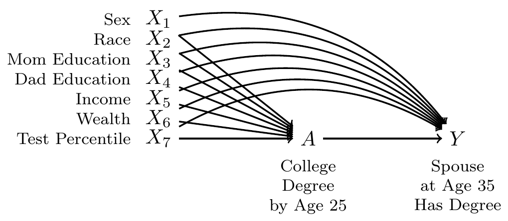

library(tidyverse)Models for causal inference
Here are slides on outcome modeling, a quick review and then on to treatment modeling, and slides (to come) on doubly-robust estimation.
Models are useful when we need subgroup summaries but we do not observe very many units in each subgroup. This situation is common in causal inference: we assume that \(\vec{X}\) is a sufficient adjustment set so that conditional exchangeability holds, and this allows us to identify the causal quantity \(\text{E}(Y^a\mid \vec{X} = \vec{x})\) by the statistical quantity \(\text{E}(Y\mid A = a, \vec{X} = \vec{x})\). But that empirical quantity—the subgroup mean among those with treatment value \(a\) and adjustment set value \(\vec{x}\)—may be the mean of a subgroup that is unpopulated. This is especially true in practice because the adjustment set \(\vec{X}\) is often most plausible when it includes many variables, leading to a curse of dimensionality and small subgroup sample sizes. For this reason, causal inference approaches that adjust for measured variables often require us to estimate the means in many subgroups that are sparsely populated.
This page introduces outcome models for causal inference. To run the code on this page, you will need the tidyverse.
Motivating example
To what extent does completing a four-year college degree by age 25 increase the probability of having a spouse or residential partner with a four-year college degree at age 35, among the population of U.S. residents who were ages 12–16 at the end of 1996?
We used this example on the Why Model? page and will continue with it here. For those jumping in on this page, here is a refresher.
This causal question draws on questions in sociology and demography about assortative mating: the tendency of people with high education, income, or status to form households together1. One reason to care about assortative mating is that it can contribute to inequality across households: if people with high earnings potential form households together, then income inequality across households will be greater than it would be if people formed households randomly.
Our question is causal: to what extent is the probability of marrying a four-year college graduate higher if one were hypothetically to finish a four-year degree, versus if that same person were hypothetically to not finish a college degree? But in data that exist in the world, we see only one of these two potential outcomes. The people for whom we see the outcome under a college degree are systematically different from those for whom we see the outcome under no degree: college graduates come from families with higher incomes, higher wealth, and higher parental education, for example. All of these factors may directly shape the probability of marrying a college graduate even in the absence of college. Thus, it will be important to adjust for a set of measured confounders, represented by \(\vec{X}\) in our DAG.

By adjusting for the variables \(\vec{X}\), we block all non-causal paths between the treatment \(A\) and the outcome \(Y\) in the DAG. If this DAG is correct, then conditional exchangeability holds with this adjustment set: \(\{Y^1,Y^0\}\indep A \mid\vec{X}\).
To estimate, we use data from the National Longitudinal Survey of Youth 1997, a probability sample of U.S. resident children who were ages 12–16 on Dec 31, 1996. The study followed these children and interviewed them every year through 2011 and then every other year after that.
We will analyze a simulated version of these data (nlsy97_simulated.csv), which you can access with this line of code.
data <- read_csv("https://soc114.github.io/data/nlsy97_simulated.csv")
Expand to learn how to get the actual data
To access the actual data, you would need to register for an account, log in, upload the nlsy97.NLSY97 tagset that identifies our variables, and then download. Unzip the folder and put the contents in a directory on your computer. Then run our code file prepare_nlsy97.R in that folder. This will produce a new file d.RDS, contains the data. You could analyze that file. In the interest of transparency, we wrote the code nlsy97_simulated.R to convert these real data to simulated data that we can share.
The data contain several variables
idis an individual identifier for each personais the treatment, containing the respondent’s education codedtreatedif the respondent completed a four-year college degree anduntreatedif not.yis the outcome:TRUEif has a spouse or residential partner at age 35 who holds a college degree, andFALSEif no spouse or partner or if the spouse or partner at age 35 does not have a degree.- There are several pre-treatment variables
sexis codedFemaleandMaleraceis race/ethnicity and is codedHispanic,Non-Hispanic Black, andNon-Hispanic Non-Black.mom_educis the respondent’s mother’s education as reported in 1997. It takes the valueNo momif the child had no residential mother in 1997, and otherwise is coded with her education:< HS,High school,Some college, orCollege.dad_educis the respondent’s father’s education as reported in 1997. It takes the valueNo dadif the child had no residential father in 1997, and otherwise is coded with his education:< HS,High school,Some college, orCollege.log_parent_incomeis the log of gross household income in 1997log_parent_wealthis the log of household net worth in 1997test_percentileis the respondent’s percentile score on a test of math and verbal skills administered in 1999 (the Armed Services Vocational Aptitude Battery).
When values are missing, we have replcaed them with predicted values. In the simulated data, no row represents a real person because values have been drawn randomly from a probability distribution designed to mimic what exists in the real data. As discussed above, we did this in order to share the file with you by a download on this website.
Outcome modeling
Because the causal effect of A on Y is identified by adjusting for the confounders, we can estimate by outcome modeling. There are three general steps.
- Model \(E(Y\mid A, \vec{X})\), the conditional mean of \(Y\) given the treatment and confounders
- Predict potential outcomes
- set
A = 1for every unit. Predict \(Y^1\) - set
A = 0for every unit. Predict \(Y^0\)
- set
- Aggregate to the average causal effect
1) Model factual outcomes
The code below uses Ordinary Least Squares to estimate an outcome model.
outcome_model <- lm(
y ~ a * (
sex + race + mom_educ + dad_educ + log_parent_income +
log_parent_wealth + test_percentile
),
data = data
)The lm() function estimates a linear model, which is stored in the model object. The first argument is the model formula, which defines the function by which we model the conditional mean of the outcome given the predictors. The second argument is the data we use to learn the model.
Why did we choose this model formula? You can actually choose any model formula, but there are some reasons we chose this one. In our model formula, we begin with the treatment a and then we interact this treatment with an additive function of all confounders a * (...). This is equivalent to fitting two models: an additive OLS model for \(Y^\text{treated}\) and an additive OLS model for \(Y^\text{untreated}\), which is a desirable thing to do when we think the effect of college may differ for people with different values on the adjustment set. This type of model was proposed by Lin (2013) and is also known as a t-learner (Kunzel et al. 2019) because it is equivalent to estimating two separate regression models of outcome on confounder: one for the treated group and one for the untreated group. For a recent discussion of its advantages, see Hazlett & Shinkre (2024).
The model has a lot of terms! You can see them with summary(model). Thankfully, we won’t interpret any of them. We will just use the model as a tool to predict potential outcomes.
2) Predict potential outcomes
The code below predicts the conditional average potential outcome under treatment and control at the confounder values of each observation.
First, we create data with a set to the value treated for everyone.
data_if_treated <- data |>
mutate(a = "treated")# A tibble: 7,771 × 10
id a y sex race mom_educ dad_educ log_parent_income
<dbl> <chr> <lgl> <chr> <chr> <chr> <chr> <dbl>
1 1 treated TRUE Male Non-Hispanic No… < HS < HS 8.55
2 2 treated FALSE Male Non-Hispanic No… Some co… College 31.8
3 3 treated FALSE Male Non-Hispanic Bl… College High sc… 14.1
# ℹ 7,768 more rows
# ℹ 2 more variables: log_parent_wealth <dbl>, test_percentile <dbl>Then, we create data with a set to the value untreated for everyone.
data_if_untreated <- data |>
mutate(a = "untreated")# A tibble: 7,771 × 10
id a y sex race mom_educ dad_educ log_parent_income
<dbl> <chr> <lgl> <chr> <chr> <chr> <chr> <dbl>
1 1 untreated TRUE Male Non-Hispanic … < HS < HS 8.55
2 2 untreated FALSE Male Non-Hispanic … Some co… College 31.8
3 3 untreated FALSE Male Non-Hispanic … College High sc… 14.1
# ℹ 7,768 more rows
# ℹ 2 more variables: log_parent_wealth <dbl>, test_percentile <dbl>We use our outcome model to predict the conditional mean of the potential outcome under each scenario.
predicted_outcomes <- data |>
mutate(
y1_predicted = predict(outcome_model, newdata = data_if_treated),
y0_predicted = predict(outcome_model, newdata = data_if_untreated),
effect_predicted = y1_predicted - y0_predicted
) |>
select(id, a, y, y1_predicted, y0_predicted, effect_predicted)# A tibble: 7,771 × 6
id a y y1_predicted y0_predicted effect_predicted
<dbl> <chr> <lgl> <dbl> <dbl> <dbl>
1 1 treated TRUE 0.507 0.318 0.188
2 2 treated FALSE 0.742 0.505 0.237
3 3 untreated FALSE 0.391 0.159 0.232
# ℹ 7,768 more rowsIn the code above, the function call predict(model, newdata = data_if_treated) uses the model object to make predictions for the data in data_if_treated, which contains each person coded with the treatment set to treated. The predicted values y1_predicted are predictions \(\hat{Y}^\text{treated}\) of the potential outcome under a four-year college degree. Likewise, the function call predict(model, newdata = data_if_untreated) predicts the outcomes under no college degree. The effect_predicted variable contains the predicted causal effect at the adjustment set values of each person in the data.
3) Aggregate
The final step is to aggregate to an average causal effect estimate.
outcome_model_estimate <- predicted_outcomes |>
select(y1_predicted, y0_predicted, effect_predicted) |>
summarize_all(.funs = mean)# A tibble: 1 × 3
y1_predicted y0_predicted effect_predicted
<dbl> <dbl> <dbl>
1 0.432 0.160 0.272We estimate that completing college increases the probability of having a college-educated by 0.272, from 0.16 to 0.432. This causal conclusion relies both on our causal assumptions (the DAG) and our statistical assumptions (the chosen model).
Treatment modeling
Instead of modeling the outcome, another way of using models for causal inference is to model the probability of treatment assignment. This approach is more analogous to sampling from a population.
In a probability sample, we observe the outcome \(Y_i\) for any sampled unit \((S_i=1)\) which is seen with some probability of sampling, \(P(S=1\mid\vec{X} = \vec{x}_i)\) that may differ across subgroups with different values of some variables \(\vec{X}\). As discussed in population sampling, the sampling weight is the inverse of these probabilities. A person who is sampled with a 20% probability represents 1 / .2 = 5 people in the population (the other 4 being unsampled).
In a conditionally randomized experiment, we observe the outcome under treatment \(Y_i^1\) for any treated unit \(A_i=1\), which might be assigned with some probability \(P(A_i=1\mid\vec{X} = \vec{x}_i)\) that differs across subgroups defined by an adjustment set \(\vec{X}\). In a conditionally randomized experiment, these probabilities are known and the overall expected outcome under treatment \(\E(Y^1)\) can be estimated by the average of the observed outcomes under treatment, weighted by the inverse probability of being treated. A treated unit who had a 20% probability of being treated represents 1 / .2 = 5 people (the other 4 being untreated).
In an observational study, we don’t know the probability of being treated given the variables in our sufficient adjustment set. We need to model that probability. There are three general steps.
- Model treatment probabilities given an adjustment set
- Construct a weight for each unit
- Estimate by weighted means within each treatment group
1) Model treatment probabilities
One way to model the probability of treatment is with logistic regression. If logistic regression is new to you, see the bottom of What is a model?.
\[ \log\left(\frac{P(A = 1 \mid\vec{X})}{1-P(A = 1\mid\vec{X})}\right) = \alpha + \vec{X}'\vec\beta \]
treatment_model <- glm(
I(a == "treated") ~ sex + race + mom_educ + dad_educ + log_parent_income +
log_parent_wealth + test_percentile,
family = binomial,
data = data
)For every unit, we can then predict the probability of being treated given the adjustment set.
predicted_treatment_probabilities <- data |>
mutate(p_treated = predict(treatment_model, type = "response")) |>
select(id, a, y, p_treated)# A tibble: 7,771 × 4
id a y p_treated
<dbl> <chr> <lgl> <dbl>
1 1 treated TRUE 0.236
2 2 treated FALSE 0.860
3 3 untreated FALSE 0.133
# ℹ 7,768 more rowsThe type = "response" argument is essential, because this tells R to predict the probability of treatment instead of the log odds of treatment.
2) Construct weights
For each unit, we can construct a weight that is the inverse probability of that unit’s treatment assignment. Recall that if a unit is treated and had a 0.2 probability of treatment, then we could think of this unit as representing 1 / 0.2 = 5 units: itself and 4 others like it who were not treated. The weight on each unit is the inverse probability of the treatment value that happened for that unit.
\[ w_i = \begin{cases} \frac{1}{\P(A = 1\mid \vec{X} = \vec{x}_i)} &\text{if treated} \\ \frac{1}{1 - \P(A = 1\mid \vec{X} = \vec{x}_i)} &\text{if untreated} \end{cases} \]
In code, we can use case_when() to assign this weight as 1 / p_treated for treated units and 1 / (1 - p_treated) for untreated units.
inverse_probability_weights <- predicted_treatment_probabilities |>
mutate(
weight = case_when(
a == "treated" ~ 1 / p_treated,
a == "untreated" ~ 1 / (1 - p_treated)
)
)# A tibble: 7,771 × 5
id a y p_treated weight
<dbl> <chr> <lgl> <dbl> <dbl>
1 1 treated TRUE 0.236 4.24
2 2 treated FALSE 0.860 1.16
3 3 untreated FALSE 0.133 1.15
# ℹ 7,768 more rows3) Estimate by weighted means
Finally, we use the weights to take the treated units and draw inference about what would happen to all units if they were hypothetically treated, and to use the untreated units and draw inference about what would happen to all units if they were hypothetically untreated.
inverse_probability_weights |>
# Within each treatment group
group_by(a) |>
# Take the mean weighted by inverse probability of treatment weights
summarize(estimate = weighted.mean(y, w = weight)) |>
# Pivot wider and difference to estimate the effect
pivot_wider(names_from = a, values_from = estimate, names_prefix = "if_") |>
mutate(effect = if_treated - if_untreated)# A tibble: 1 × 3
if_treated if_untreated effect
<dbl> <dbl> <dbl>
1 0.425 0.167 0.259Doubly-robust estimation
We don’t have to constrain ourselves to outcome modeling or treatment modeling. We can also use both together.
- Model outcomes and produce an initial ATE estimate
- Model treatment probabilities and produce inverse probability weights
- Estimate the weighted average error of your outcome model
- For each unit, calculate the error \(Y-\hat{Y}\)
- Each unit represents a number of units corresponding to its inverse probability weight
- Estimate the population-average error by the weighted mean of errors, within each treatment group
- Improve estimate (1) by subtracting the average error (3)
This estimator has some properties that make it superior to outcome or treatment modeling alone, as we will discuss at the end of this section.
1) Model outcomes and produce an initial ATE estimate.
We already did this above! Our predictions are stored in an object already.
predicted_outcomes |> print(n = 3)# A tibble: 7,771 × 6
id a y y1_predicted y0_predicted effect_predicted
<dbl> <chr> <lgl> <dbl> <dbl> <dbl>
1 1 treated TRUE 0.507 0.318 0.188
2 2 treated FALSE 0.742 0.505 0.237
3 3 untreated FALSE 0.391 0.159 0.232
# ℹ 7,768 more rows2) Model treatments to create weights
We already did this above! Our weights are stored in an object already.
inverse_probability_weights |> print(n = 3)# A tibble: 7,771 × 5
id a y p_treated weight
<dbl> <chr> <lgl> <dbl> <dbl>
1 1 treated TRUE 0.236 4.24
2 2 treated FALSE 0.860 1.16
3 3 untreated FALSE 0.133 1.15
# ℹ 7,768 more rows3) Estimate the weighted average error
For each unit, we can calculate the error as the difference between the actual outcome \(Y\) and the predicted outcome \(\hat{Y}\) under the treatment value that actually happened for that unit.
errors <- predicted_outcomes |>
mutate(
error = case_when(
a == "treated" ~ y1_predicted - y,
a == "untreated" ~ y0_predicted - y
)
)# A tibble: 7,771 × 7
id a y y1_predicted y0_predicted effect_predicted error
<dbl> <chr> <lgl> <dbl> <dbl> <dbl> <dbl>
1 1 treated TRUE 0.507 0.318 0.188 -0.493
2 2 treated FALSE 0.742 0.505 0.237 0.742
3 3 untreated FALSE 0.391 0.159 0.232 0.159
# ℹ 7,768 more rowsWe then merge our errors with our weights, so that we can see how many total units each error should represent.
errors_with_weight <- errors |>
select(id, a, error) |>
left_join(
inverse_probability_weights |> select(id, p_treated, weight),
by = join_by(id)
)# A tibble: 7,771 × 5
id a error p_treated weight
<dbl> <chr> <dbl> <dbl> <dbl>
1 1 treated -0.493 0.236 4.24
2 2 treated 0.742 0.860 1.16
3 3 untreated 0.159 0.133 1.15
# ℹ 7,768 more rowsAs a concrete example, the error when predicting the first person’s outcome was -0.493. This person’s treatment was treated, and that treatment occurred with treatment probability 0.236. Some units like this unit got treated, and others didn’t. When we take a weighted average within treatment groups to estimate the average over all people, this person’s error stands in for the errors of 4.244 units in total.
With our inverse probability weights, we can take the weighted average error within each treatment group as an estimate of the error that would persist if we hypothetically applied our model to all the \(Y^1\) values and all the \(Y^0\) values (even the ones we didn’t see).
weighted_average_error <- errors_with_weight |>
group_by(a) |>
summarize(average_outcome_error = weighted.mean(error, w = weight)) |>
print()# A tibble: 2 × 2
a average_outcome_error
<chr> <dbl>
1 treated 0.00960
2 untreated -0.00416In this case our model was very good—the weighted average errors are nearly 0! The weighted average error of (outcome under treatment) - (outcome under control) is calculated below.
weighted_average_effect_error <- weighted_average_error |>
pivot_wider(
names_from = a,
values_from = average_outcome_error,
names_prefix = "average_error_"
) |>
mutate(effect_error = average_error_treated - average_error_untreated) |>
pull(effect_error)We estimate that our outcome model was mis-specified: we estimate that our outcome model estimate will be 0.014 away from the truth. We can improve our estimate by subtracting the estimated error from the original estimate.
\[ \text{Updated Estimate} = \text{Outcome Model Estimate} - \text{Estimated Error} \]
updated_estimate <- outcome_model_estimate |>
mutate(estimated_error = weighted_average_effect_error) |>
mutate(updated_estimate = effect_predicted - estimated_error) |>
print()# A tibble: 1 × 5
y1_predicted y0_predicted effect_predicted estimated_error updated_estimate
<dbl> <dbl> <dbl> <dbl> <dbl>
1 0.432 0.160 0.272 0.0138 0.258Why double robustness?
The doubly-robust estimator has a desirable property. We would like it to be the case that our estimator of the average causal effect is consistent: as the sample size grows to infinity, the estimator converges to the true average causal effect. Let \(\hat{f}()\) be the estimated outcome model and \(\hat{m}()\) be the estimated treatment model. The doubly-robust estimator is consistent for the average causal effect if either
- The outcome model is consistent for the truth: \(\hat{f}(a,\vec{x})\rightarrow \text{E}(Y\mid A = a, \vec{X} = \vec{x})\) for all values \(a\) and \(\vec{x}\) OR
- The treatment model is consistent for the truth: \(\hat{m}(\vec{x})\rightarrow \text{P}(A = 1\mid \vec{X} = \vec{x})\) where the \(\rightarrow\) indicates asymptotic convergence as the sample size grows.
Our estimator is good if either (1) or (2) is true! When we aren’t sure how to specify the form of our model, it is good to have two chances.
When both estimators are consistent, the doubly-robust estimator brings additional advantages such as a faster rate of convergence toward the truth as the sample size grows. For many statistical reasons, we should prefer the doubly robust estimator.
A reason to choose outcome or treatment modeling on its own is that each of these alone may be easier to implement and explain to readers than the doubly-robust estimator. When presenting complex statistical results, being able to explain the procedure to your audience is an important consideration.
Concluding thoughts
Outcome modeling is a powerful strategy because it bridges nonparametric causal identification to longstanding strategies where outcomes are modeled by parametric regression.
Inverse probability of treatment weighting is a powerful strategy because it bridges nonparametric causal identification to longstanding strategies from survey sampling where units from a population are sampled with known probabilities of inclusion. The analogy is that outcomes under treatment are sampled with estimated inclusion probabilities (the probability of treatment). Just as in a population sample we would need to think carefully about the probability of sampling, treatment modeling encourages us to model the probability of receiving the observed treatment.
Doubly robust estimation brings the two together for an estimator that is statistically preferable, albeit conceptually more complicated!
Footnotes
For reviews, see Mare 1991 and Schwartz 2013.↩︎